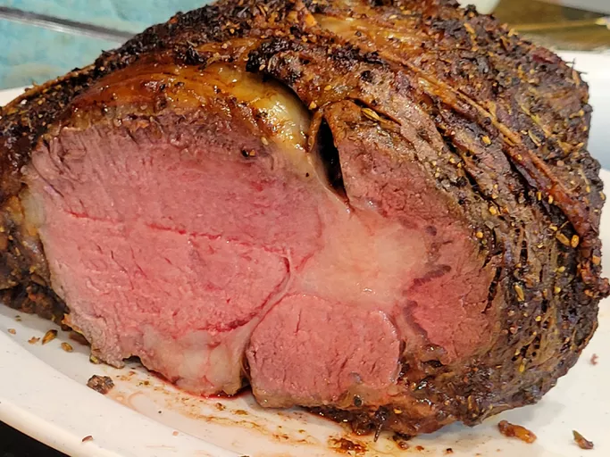

Steak

Description
A luxury item seen across the world. The steak manages to be found on both your home dining table and the most expensive restaurants. In this way, it is unlike the vast majority of other foods in its versatility.
Ingredients
-
1 (4 pound) bone-in prime rib roast (room temperature)
-
1/4 cup unsalted butter, softened
-
1 tablespoon freshly ground black pepper
-
1 teaspoon herbes de Provence
-
kosher salt to taste
Steps
-
Gather the ingredients. Place prime rib roast on a plate and bring to room temperature, 2 to 4 hours. Preheat the oven to 500 degrees F (260 degrees C).
-
Combine butter, pepper, and herbes de Provence in a bowl; mix until well blended. Spread butter mixture evenly over entire roast. Season roast generously with kosher salt.
-
Roast the 4-pound roast in the preheated oven for 20 minutes. (If your roast is larger or smaller than 4 pounds, multiply the exact weight times 5 minutes.)
-
Turn the oven off and, leaving the roast in the oven with the door closed, let the roast sit in the oven for 2 hours.
-
Remove roast from the oven, slice, and serve.